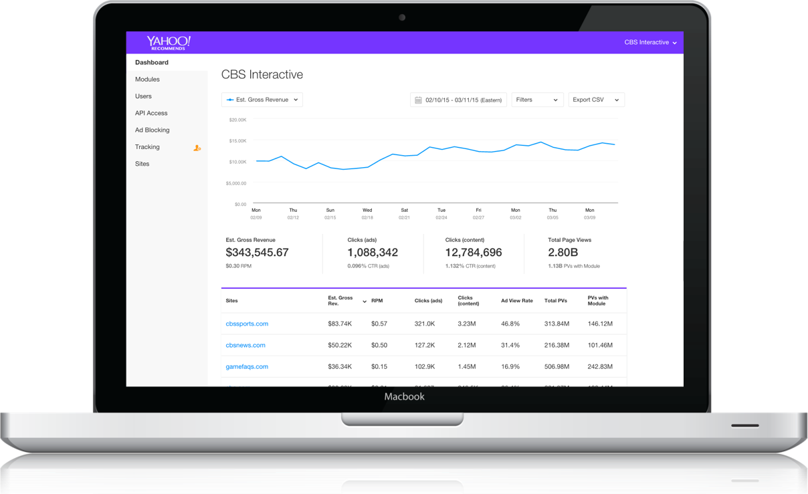

Project Description
Yahoo Recommends is a service offered to external publishers to recirculate personalized content to their users via Yahoo's recommendation engine.
My role: Product design lead and all analytics designs/UI.
Project Goals
- Recirculate external publisher content using Yahoo's personalization technology
- Extend suite of services to large-scale publishers
- Increase PVs, UUs, ad revenue, dwell time, brand exposure
- Compete with and surpass Taboola and Outbrain

Project Results
- Conceived, built and launched in 4 months (May-August 2014)
- 10 large-scale publishers onboarded by end of 2014
- 35 New publishers onboarded in Q1 2015
- Total combined revenue Aug to Dec 2014 $3M